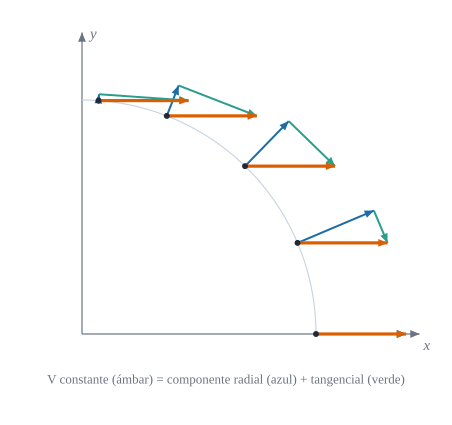
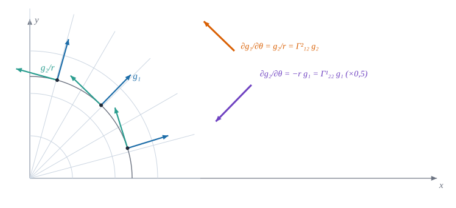
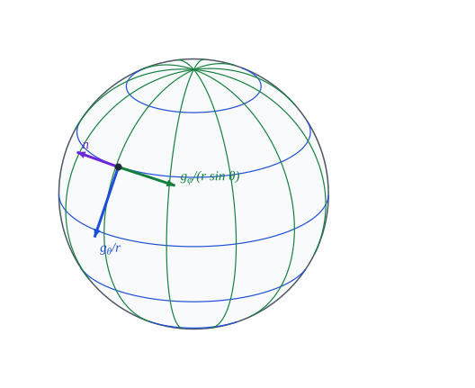

6 Símbolos de Christoffel y derivada covariante
Derivar cuando la base cambia de un punto a otro

Si la base cambia de un punto a otro, cómo derivamos un campo vectorial sin confundir el cambio del vector con el giro de la base
Objetivos y prerrequisitos
Objetivos. Al terminar el tema sabrás:
- explicar por qué derivar las componentes de un vector no basta cuando la base varía de punto a punto;
- definir los símbolos de Christoffel como las componentes de \(\partial\mathbf{g}_i/\partial\theta^j\) sobre la base y calcularlos a partir de la métrica;
- definir la derivada covariante de componentes contravariantes y covariantes;
- demostrar que la métrica es «constante» para la derivada covariante;
- comprobar en Julia que un campo constante tiene derivada covariante nula aunque sus componentes polares varíen.
Prerrequisitos. Tensor métrico y componentes físicas y Bases covariantes y contravariantes.
Secciones del tema
- Sección 6.1 · Motivación · Sección 6.2 · Símbolos de Christoffel · Sección 6.3 · Derivada covariante
- Sección 6.4 · Del plano a la superficie
- Sección 6.5 · Laboratorio interactivo · Sección 6.6 · Práctica guiada en Julia
6.1 Motivación
En cartesianas, la base \(\{\mathbf{e}_x,\mathbf{e}_y\}\) es la misma en todos los puntos, y derivar un campo vectorial es derivar sus componentes. En polares la base gira y se estira de un punto a otro (Figura 6.2). Si \(\mathbf{V}\) es un campo constante, sus componentes polares no lo son (Figura 6.1), y derivarlas por separado daría una derivada «distinta de cero» para un campo que no cambia.

ImportanteIdea clave
La derivada de \(\mathbf{V}=V^i\mathbf{g}_i\) tiene dos contribuciones: cómo cambian las componentes \(V^i\) y cómo cambia la base \(\mathbf{g}_i\). Los símbolos de Christoffel recogen la segunda.
6.2 Símbolos de Christoffel
Definición 6.1 (Símbolos de Christoffel) Para unas coordenadas \(\theta^i\) en el espacio euclídeo, las derivadas de los vectores de la base se descomponen sobre la propia base: \[ \frac{\partial\mathbf{g}_i}{\partial\theta^j}=\Gamma^{k}_{ij}\,\mathbf{g}_k , \qquad\text{es decir,}\qquad \Gamma^{k}_{ij}=\mathbf{g}^k\cdot\frac{\partial\mathbf{g}_i}{\partial\theta^j} . \tag{6.1}\] Los \(\Gamma^k_{ij}\) son los símbolos de Christoffel de segunda especie. Los de primera especie son \(\Gamma_{ij,k}=\mathbf{g}_k\cdot\partial_j\mathbf{g}_i=g_{kl}\Gamma^l_{ij}\).
AdvertenciaConvenio de índices
En ecuación 6.1 el primer índice inferior \(i\) es el del vector derivado y el segundo, \(j\), el de la coordenada respecto de la que se deriva. Como \(\partial_j\mathbf{g}_i=\partial_j\partial_i\mathbf{r}=\partial_i\mathbf{g}_j\), los símbolos son simétricos en \(i,j\) en espacios sin torsión (como los considerados aquí). Otros textos usan órdenes de índices o notaciones distintas (\(\left\{{k\atop ij}\right\}\)); en este libro, la posición de los índices de \(\Gamma\) en superficies está pendiente de confirmar en el apéndice de notación (Sección A.1).
Proposición 6.1 (Los símbolos de Christoffel dependen solo de la métrica) \[ \Gamma^{k}_{ij}=\tfrac12\,g^{kl}\left(\frac{\partial g_{lj}}{\partial\theta^i}+\frac{\partial g_{li}}{\partial\theta^j}-\frac{\partial g_{ij}}{\partial\theta^l}\right) \tag{6.2}\] y son simétricos: \(\Gamma^k_{ij}=\Gamma^k_{ji}\).
NotaDemostración de Proposición 6.1
La simetría viene de \(\partial_j\mathbf{g}_i=\partial_i\mathbf{g}_j\). Para la fórmula, derivando \(g_{ij}=\mathbf{g}_i\cdot\mathbf{g}_j\): \[ \partial_k g_{ij}=\Gamma_{ik,j}+\Gamma_{jk,i}. \] Escribiendo esta igualdad con los índices permutados cíclicamente, sumando dos de ellas y restando la tercera, y usando la simetría \(\Gamma_{ij,k}=\Gamma_{ji,k}\), queda \(\Gamma_{ij,l}=\tfrac12(\partial_i g_{lj}+\partial_j g_{li}-\partial_l g_{ij})\). Subiendo el índice con \(g^{kl}\) se obtiene ecuación 6.2. \(\blacksquare\)
AdvertenciaLos \(\Gamma^k_{ij}\) no son un tensor
En cartesianas, \(\mathbf{g}_i\) es constante y todos los símbolos son nulos; en polares no. Un tensor nulo en un sistema es nulo en todos, así que \(\Gamma^k_{ij}\) no es un tensor: su ley de transformación incluye un término con segundas derivadas, \[ \Gamma'^{\,k}_{ij}=\frac{\partial\theta'^{\,k}}{\partial\theta^{\,p}}\left(\frac{\partial\theta^{\,q}}{\partial\theta'^{\,i}}\frac{\partial\theta^{\,r}}{\partial\theta'^{\,j}}\,\Gamma^p_{qr}+\frac{\partial^2\theta^{\,p}}{\partial\theta'^{\,i}\partial\theta'^{\,j}}\right). \tag{6.3}\]
6.2.1 Ejemplos
TipPolares y esféricas
analítico Los únicos símbolos no nulos son:
| Sistema | Símbolos no nulos |
|---|---|
| Polares \((r,\theta)\) | \(\Gamma^1_{22}=-r\), \(\;\Gamma^2_{12}=\Gamma^2_{21}=1/r\) |
| Esféricas \((r,\theta,\varphi)\) | \(\Gamma^1_{22}=-r\), \(\;\Gamma^1_{33}=-r\sin^2\theta\), \(\;\Gamma^2_{12}=\Gamma^2_{21}=1/r\), \(\;\Gamma^2_{33}=-\sin\theta\cos\theta\), \(\;\Gamma^3_{13}=\Gamma^3_{31}=1/r\), \(\;\Gamma^3_{23}=\Gamma^3_{32}=\cot\theta\) |
En polares coinciden con los coeficientes de la Figura 6.2: \(\partial_\theta\mathbf{g}_1=\Gamma^2_{12}\mathbf{g}_2=\mathbf{g}_2/r\) y \(\partial_\theta\mathbf{g}_2=\Gamma^1_{22}\mathbf{g}_1=-r\,\mathbf{g}_1\).
Ejemplo 6.1 (Ejemplo resuelto: los símbolos de las polares «con las manos») Se derivan las bases \(\mathbf{g}_1=(\cos\theta,\sin\theta)\) y \(\mathbf{g}_2=r(-\sin\theta,\cos\theta)\) y se descomponen sobre ellas:
- \(\partial_\theta\mathbf{g}_1=(-\sin\theta,\cos\theta)=\dfrac1r\mathbf{g}_2\ \Rightarrow\ \Gamma^2_{12}=\dfrac1r\) (y \(\Gamma^1_{12}=0\));
- \(\partial_r\mathbf{g}_2=(-\sin\theta,\cos\theta)=\dfrac1r\mathbf{g}_2\ \Rightarrow\ \Gamma^2_{21}=\dfrac1r\) (simetría ✓);
- \(\partial_\theta\mathbf{g}_2=-r(\cos\theta,\sin\theta)=-r\,\mathbf{g}_1\ \Rightarrow\ \Gamma^1_{22}=-r\);
- \(\partial_r\mathbf{g}_1=\mathbf{0}\), luego \(\Gamma^k_{11}=0\).
En \(r=2\): \(\Gamma^2_{12}=0{,}5\) y \(\Gamma^1_{22}=-2\).
Ejemplo 6.2 (Ejemplo resuelto: un campo constante tiene derivada covariante nula) Sea \(\mathbf{V}=(1,0)\) constante: \(V^1=\cos\theta\), \(V^2=-\sin\theta/r\). Las derivadas parciales no son nulas, por ejemplo \(\partial_\theta V^1=-\sin\theta\). Pero la derivada covariante sí: \[ V^1{}_{\|2}=\partial_\theta V^1+\Gamma^1_{22}V^2=-\sin\theta+(-r)\Bigl(-\frac{\sin\theta}{r}\Bigr)=0, \qquad V^2{}_{\|1}=\partial_rV^2+\Gamma^2_{21}V^2=\frac{\sin\theta}{r^2}+\frac1r\Bigl(-\frac{\sin\theta}{r}\Bigr)=0 . \] Descontar el giro de la base (\(\Gamma\)) deja justo lo que cambia el vector: nada.
Pon a prueba lo anterior. Los ejercicios se corrigen en tu navegador y no envían nada a ningún sitio.
En polares, ¿cuánto vale \(\Gamma^1_{22}\) en el punto \(r=2\)?
\(\Gamma^1_{22}=-r=-2\).
Para el campo constante \(\mathbf{V}=(1,0)\), ¿cuánto vale la derivada parcial \(\partial_\theta V^1\) en \(\theta=\pi/6\)?
\(V^1=\cos\theta\), luego \(\partial_\theta V^1=-\sin\theta=-0{,}5\). Distinta de cero, aunque el campo es constante.
Los símbolos de Christoffel \(\Gamma^k_{ij}\) forman un tensor de orden tres.
Falso. Son nulos en cartesianas y no nulos en polares; un tensor nulo en un sistema es nulo en todos. Su ley de transformación incluye un término con segundas derivadas (ecuación 6.3).
6.3 Derivada covariante
Definición 6.2 (Derivada covariante de un vector) Si \(\mathbf{V}=V^i\mathbf{g}_i=V_i\mathbf{g}^i\), la derivada \(\partial_j\mathbf{V}\) se descompone como \(\partial_j\mathbf{V}=V^i{}_{\|j}\,\mathbf{g}_i=V_{i\|j}\,\mathbf{g}^i\). Las derivadas covariantes de las componentes son \[ V^{i}{}_{\|j}=\frac{\partial V^i}{\partial\theta^j}+\Gamma^{i}_{kj}\,V^k, \qquad V_{i\|j}=\frac{\partial V_i}{\partial\theta^j}-\Gamma^{k}_{ij}\,V_k . \tag{6.4}\]
NotaDeducción de ecuación 6.4
Por la regla del producto y ecuación 6.1, \(\partial_j\mathbf{V}=\partial_jV^i\,\mathbf{g}_i+V^i\,\Gamma^k_{ij}\,\mathbf{g}_k=\bigl(\partial_jV^k+\Gamma^k_{ij}V^i\bigr)\mathbf{g}_k\), que es la primera fórmula tras renombrar índices. Para la segunda, derivando \(\mathbf{g}^i\cdot\mathbf{g}_k=\delta^i_k\) se obtiene \(\partial_j\mathbf{g}^i=-\Gamma^i_{kj}\,\mathbf{g}^k\), de donde \(\partial_j\mathbf{V}=\partial_jV_i\,\mathbf{g}^i-V_i\Gamma^i_{kj}\mathbf{g}^k=\bigl(\partial_jV_k-\Gamma^i_{kj}V_i\bigr)\mathbf{g}^k\). \(\blacksquare\)
Proposición 6.2 (Compatibilidad con la métrica) \[ g_{ij\|k}=\frac{\partial g_{ij}}{\partial\theta^k}-\Gamma^l_{ik}\,g_{lj}-\Gamma^l_{jk}\,g_{il}=0 , \tag{6.5}\] y por tanto subir y bajar índices conmuta con la derivada covariante.
NotaDemostración de Proposición 6.2
Con ecuación 6.1, \(\Gamma^l_{ik}g_{lj}=\Gamma_{ik,j}=\mathbf{g}_j\cdot\partial_k\mathbf{g}_i\) y \(\Gamma^l_{jk}g_{il}=\mathbf{g}_i\cdot\partial_k\mathbf{g}_j\). Su suma es \(\partial_k(\mathbf{g}_i\cdot\mathbf{g}_j)=\partial_kg_{ij}\), luego la diferencia es cero. \(\blacksquare\)
ImportanteIdea clave
La derivada covariante es la derivada «que se le puede preguntar al vector»: mide cuánto cambia \(\mathbf{V}\) descontando el giro de la base. Un campo constante tiene derivada covariante nula; la derivada parcial de sus componentes, no.
6.4 Del plano a la superficie
Sobre una superficie curva, como la esfera de la Figura 6.3, la base tangente \(\{\mathbf{g}_\theta,\mathbf{g}_\varphi\}\) también varía, pero la derivada \(\partial_j\mathbf{g}_i\) ya no queda contenida en el plano tangente: tiene además una componente normal. Los símbolos de Christoffel de la superficie son sus componentes tangentes, y las normales dan lugar a la curvatura (bloque C). Para la esfera de radio \(r\) fijo, los símbolos \(\Gamma^2_{33}=-\sin\theta\cos\theta\) y \(\Gamma^3_{23}=\cot\theta\) de la tabla anterior son los de la superficie.

base_esferica; \(\mathbf{n}\) es ortogonal a ambos.
6.5 Laboratorio interactivo
Laboratorio · Un campo constante visto en polares
calculado en el navegador Verificado frente a Julia (web/tests/laboratorios.test.mjs).
El campo constante \(\mathbf{V}=(V_x,V_y)\) se dibuja en el punto \((r,\theta)\) junto con la base polar. Qué observar:
- Aunque \(\mathbf{V}\) es el mismo en todos los puntos, \(V^r\) y \(V^\theta\) cambian al mover \(r\) y \(\theta\).
- Los símbolos \(\Gamma^1_{22}=-r\) y \(\Gamma^2_{12}=1/r\) crecen en valor absoluto cerca del origen: allí la base gira más deprisa.
- La derivada covariante \(V^r{}_{\|\theta}=\partial_\theta V^r+\Gamma^1_{22}V^\theta\) sale cero para \(\mathbf{V}=(1,0)\) (compruébalo con los valores de la tabla).
6.6 Ejemplo computacional en Julia
TipEjemplo computacional
calculado Se calculan los \(\Gamma^k_{ij}\) de las polares de dos formas independientes (con la base, ecuación 6.1; y solo con la métrica, ecuación 6.2) y se compara con los valores analíticos.
using Geometria, LinearAlgebra
r, θ = 1.6, 0.9
polar(t) = base_polar(t[1], t[2])
Γ_base = cristoffel(polar, [r, θ])
Γ_met = cristoffel_desde_metrica(t -> metrica(polar(t)), [r, θ])
esperado = zeros(2, 2, 2)
esperado[1, 2, 2] = -r
esperado[2, 1, 2] = esperado[2, 2, 1] = 1 / r
(Γ¹₂₂ = Γ_base[1, 2, 2], menos_r = -r,
Γ²₁₂ = Γ_base[2, 1, 2], uno_entre_r = 1 / r,
coinciden = Γ_base ≈ Γ_met ≈ esperado)(Γ¹₂₂ = -1.5999999999647547, menos_r = -1.6, Γ²₁₂ = 0.624999999984674, uno_entre_r = 0.625, coinciden = true)# Campo constante V = (1,0): componentes polares variables, derivada covariante nula
V(t) = [cos(t[2]), -sin(t[2]) / t[1]]
t0 = [r, θ]
dV = jacobiana_numerica(V, t0) # ∂ⱼVⁱ (derivada parcial)
Vcov = derivada_cov_contra(Γ_base, V(t0), dV) # Vⁱ‖ⱼ
(parcial = round.(dV; digits = 4), covariante = round.(Vcov; digits = 8))(parcial = [0.0 -0.7833; 0.306 -0.3885], covariante = [0.0 -0.0; -0.0 -0.0])Las identidades (incluida ecuación 6.5 y las esféricas) se comprueban en julia/test/runtests.jl, conjunto «Símbolos de Christoffel y derivada covariante».
6.7 Ejercicios
Cilíndricas. Calcula a mano \(\Gamma^k_{ij}\) de las cilíndricas \((\rho,\varphi,z)\) con ecuación 6.2.
NotaSoluciónCoinciden con las de polares: \(\Gamma^1_{22}=-\rho\) y \(\Gamma^2_{12}=\Gamma^2_{21}=1/\rho\); los demás son nulos.
Derivando la base. Comprueba que, en polares, \(\partial_\theta\mathbf{g}_2=-r\,\mathbf{g}_1\) derivando \(\mathbf{g}_2=r(-\sin\theta,\cos\theta)\).
NotaSolución\(\partial_\theta\mathbf{g}_2=r(-\cos\theta,-\sin\theta)=-r\,\mathbf{g}_1\).
Ley de transformación. Usa ecuación 6.3 para pasar de cartesianas (donde \(\Gamma=0\)) a polares y recupera \(\Gamma^1_{22}=-r\).
NotaSoluciónCon \(\Gamma=0\) queda \(\Gamma'^1_{22}=\dfrac{\partial r}{\partial x^p}\dfrac{\partial^2x^p}{\partial\theta^2}=\cos\theta(-r\cos\theta)+\sin\theta(-r\sin\theta)=-r\).
Divergencia. Demuestra que \(V^i{}_{\|i}=\dfrac1{\sqrt g}\partial_i\bigl(\sqrt g\,V^i\bigr)\) (pista: \(\Gamma^k_{ik}=\partial_i\ln\sqrt g\)).
NotaSolución\(V^i{}_{\|i}=\partial_iV^i+\Gamma^i_{ki}V^k=\partial_iV^i+V^k\partial_k\ln\sqrt g=\dfrac1{\sqrt g}\partial_i(\sqrt g\,V^i)\).
Esfera. Con
cristoffel, calcula los símbolos de la esfera en \((\theta,\varphi)=(0{,}8;\,0{,}5)\) y verifica \(\Gamma^3_{23}=\cot\theta\).NotaSolucióncristoffel(t -> base_esferica(t...), [1.0, 0.8, 0.5])[3, 2, 3]\(\approx\cot0{,}8=0{,}9712\).
La doy por superada si…
- Explico por qué la derivada parcial de las componentes engaña cuando la base cambia.
- Defino \(\Gamma^k_{ij}\) como \(\mathbf{g}^k\cdot\partial_j\mathbf{g}_i\) y los calculo para polares y esféricas.
- Sé que dependen solo de la métrica y que no son un tensor.
- Calculo \(V^i{}_{\|j}\) y \(V_{i\|j}\) y compruebo que un campo constante da cero.
- Sé que \(g_{ij\|k}=0\) y qué consecuencia tiene para subir y bajar índices.
NotaFuentes, correcciones y qué queda pendiente
Fuentes. Texto autónomo, resultados estándar (Heinbockel 1996; Lebedev y Cloud 2003; Flügge 1972; Carmo 1994; Struik 1955). Las identidades se han comprobado con Geometria (tests «Símbolos de Christoffel y derivada covariante»). Convenio: aquí \(\|\) denota la derivada covariante genérica de \(n\) coordenadas; en las superficies (bloque C) se reserva para la derivada respecto de la superficie.
Qué queda pendiente. Revisión visual de las figuras; notas históricas con fuentes secundarias; referencias no leídas línea a línea.
Struik, D. J. 1955. Geometría Diferencial Clásica. Aguilar.
Carmo, M. do. 1994. Geometría diferencial de curvas y superficies. Alianza Universidad.
Flügge, W. 1972. Tensor Analysis and Continuum Mechanics. Springer-Verlag.
Lebedev, L. P., y M. J. Cloud. 2003. Tensor Analysis. World Scientific.
Heinbockel, J. H. 1996. Introduction to Tensor Calculus and Continuum Mechanics. Department of Mathematics; Statistics, Old Dominion University.
Referencias
Son las mismas que aparecen en el margen, junto al texto.
Carmo, M. do. 1994. Geometría diferencial de curvas y superficies. Alianza Universidad.
Flügge, W. 1972. Tensor Analysis and Continuum Mechanics. Springer-Verlag.
Heinbockel, J. H. 1996. Introduction to Tensor Calculus and Continuum Mechanics. Department of Mathematics; Statistics, Old Dominion University.
Lebedev, L. P., y M. J. Cloud. 2003. Tensor Analysis. World Scientific.
Struik, D. J. 1955. Geometría Diferencial Clásica. Aguilar.